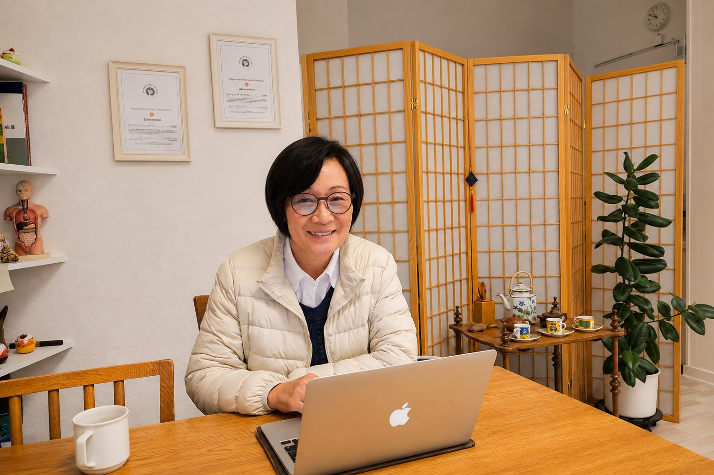
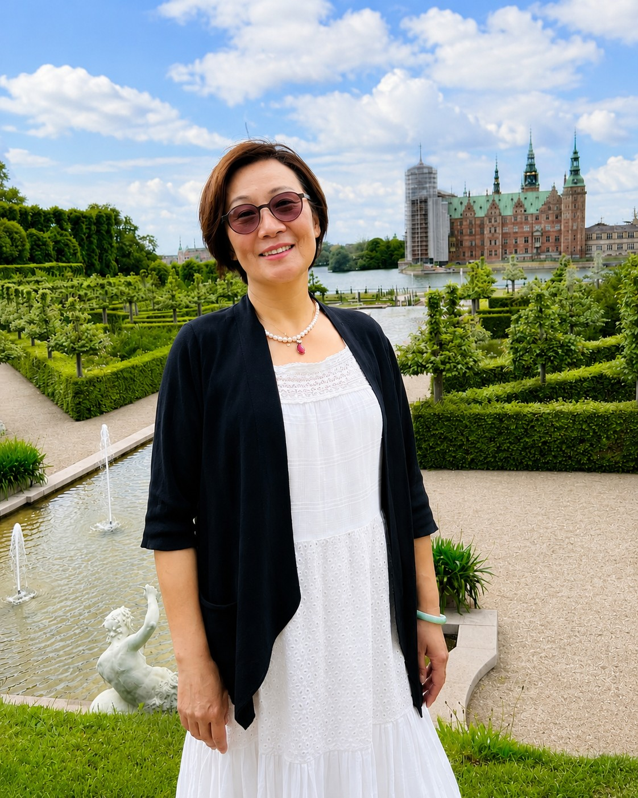

Bedre Funktion, Mere Bevægelse og Bedre Livskvalitet
Med udgangspunkt i den enkeltes behov og mål tilbyder jeg individuel rehabilitering og vejledning med fokus på funktion, bevægelse og livskvalitet.

En rolig og individuel tilgang til rehabilitering.
Hver krop har sin egen historie. Derfor tager behandlingen udgangspunkt i dig, dine behov og din hverdag.
Målet er ikke kun at reducere smerter, men at forbedre kroppens funktion og skabe større tryghed i bevægelsen.
Hvad kan du få til hos Øbro Rehabiliterings Klinik?
Ryg- og nakkesmerter
Ved smerter i ryg, nakke og skuldre samt nedsat bevægelighed tager behandlingen udgangspunkt i en individuel vurdering, rehabiliterende træning og relevante behandlingsmetoder med fokus på bedre funktion i hverdagen.
Sportsskader og funktionsproblemer
Ved skader efter sport eller daglig aktivitet samt muskuloskeletale funktionsproblemer arbejder vi gradvist med bevægelse, styrke og kropskontrol for at støtte genopbygningen af funktion.
Rehabilitering efter operation og sygdom
Rehabiliteringen tilpasses den enkeltes situation og fase efter operation eller sygdom med fokus på gradvist at genopbygge funktion, bevægelighed og selvstændighed i hverdagen.
Kroniske smerter og længerevarende funktionsproblemer
Ved vedvarende smerter eller længerevarende funktionsbegrænsninger arbejder vi med funktion, bevægelse og relevante hverdagsfaktorer med henblik på at styrke den enkeltes muligheder for langsigtet egenhåndtering.
Traditionel kinesisk medicin
Med udgangspunkt i et helhedsorienteret perspektiv kan akupunktur, zoneterapi og andre relevante traditionelle behandlingsprincipper integreres i rehabiliteringen, når det er relevant, med fokus på funktion, balance og livskvalitet.
Tai Chi og rehabiliterende bevægelse
Tai Chis rolige og koordinerede bevægelser kan, når det er relevant, indgå i rehabiliteringen med fokus på balance, koordination, bevægelighed, kropskontrol og afspænding. Øvelserne tilpasses den enkeltes funktion og muligheder.
“At rehabilitere er ikke kun at behandle det, der gør ondt. Det er at hjælpe kroppen med igen at finde muligheder.”
Ro · nærvær · funktion · bevægelse
Om mig

Hongling Mo Sønnichsen
MSc i Rehabilitering · RAB Akupunktør · RAB Zoneterapeut
Min faglige baggrund
Jeg arbejder i dag med klinisk rehabilitering på et tværfagligt sundhedscenter i København. Jeg har en kandidatuddannelse i rehabilitering fra Syddansk Universitet og en medicinsk uddannelsesbaggrund fra Guangxi Medical University i Kina.
Tidligt i min karriere arbejdede jeg med undervisning og forskning inden for patofysiologi og immunologi i Kina. I 2000 deltog jeg som udvekslingsforsker i et dansk-kinesisk forskningsprojekt, hvor jeg arbejdede med ekstraktion og analyse af indholdsstoffer fra udvalgte kinesiske lægeurter samt deres potentielle betydning for immunfunktionen. Det blev begyndelsen på min forskningsmæssige og faglige tilknytning til Danmark.
Siden 2022 har jeg studeret under professor og ph.d. Ma Shouchun med særlig fordybelse i Zhang Zhongjings Shang Han Za Bing Lun og den klassiske kinesiske medicinske tænkning. Jeg er medlem af forskningsforeningen for Fuling-versionen af Shang Han Za Bing Lun og deltager i studiegruppen for Recompiled Shi-annotated Shang Han Za Bing Lun (Fuling-versionen). Studiegruppen samler forskere og fagpersoner fra forskellige dele af verden med interesse for Shang Han Lun og Jin Gui Yao Lue med henblik på fælles studie og forskning i Fuling-versionen af Shang Han Za Bing Lun. Gennem dette systematiske arbejde med klassisk teori og klinisk tænkning har jeg uddybet min forståelse af den helhedsorienterede tilgang i kinesisk medicin, mønstergenkendelse og individuelt tilpasset behandling. Jeg har publiceret flere videnskabelige artikler inden for medicin, immunologi, rehabilitering og beslægtede områder.
En alvorlig trafikulykke i 2012 blev et vigtigt vendepunkt i mit liv. Min egen langvarige rehabiliteringsproces gav mig en dybere forståelse af de fysiske og psykiske udfordringer, der kan opstå under et rehabiliteringsforløb. Erfaringen blev samtidig en vigtig motivation for min videre uddannelse og mit arbejde inden for rehabilitering.
Jeg arbejder med at integrere traditionelle behandlingsmetoder og moderne rehabilitering. Min baggrund inden for medicin, grundforskning, immunologi og klinisk rehabilitering giver mig mulighed for at betragte rehabilitering fra et tværfagligt perspektiv – fra forståelsen af kroppens biologiske mekanismer til genopbygning af funktion, selvstændighed og livskvalitet.
I mit kliniske arbejde lægger jeg vægt på at møde den enkelte med ro, faglighed og respekt. Med udgangspunkt i den enkeltes behov og mål kombinerer jeg evidensbaseret rehabilitering med akupunktur, zoneterapi, principper fra kinesisk medicin og relevant rehabiliterende bevægelse. Fokus er på funktion, bevægelse, selvstændighed og livskvalitet samt på patientuddannelse og udvikling af den enkeltes evne til egenhåndtering.
Mit ønske er at bruge min faglige erfaring, tværkulturelle baggrund og forståelse af rehabilitering til at hjælpe den enkelte med at genvinde bedst mulig funktion, bevare bevægelse og selvstændighed og opnå en bedre livskvalitet.